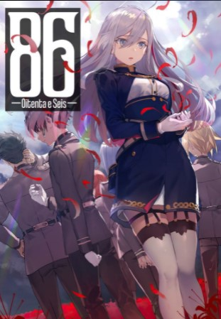

Detalhes
Sobre
O site é um bom local considerado a fim de obter Opniões de certos livros, lendo as opniões dos leitores é possível que o usuario saiba se o livro é bom ou não
Importancia
O estudo mostra a razão diversos tipos de opinões serem importante para o aprendizado
Sugestões
